Yayu Zhang, Yu-Hui Wen ∗, Chenguang Li, Liping Jing, Jian Yu
School of Computer Science and Technology, Beijing Jiaotong University, Beijing, 100044, China Beijing Key Laboratory of Traffic Data Mining and Embodied Intelligence (Beijing Jiaotong University), Beijing, 100044, China
Article information
Keywords: Co-speech motion Latent diffusion models Contrastive learning Style encoder
Abstract
Speech-driven 3D motion generation has garnered increasing research attention. However, it faces significant challenges in achieving style controllability, primarily due to the scarcity of motion style annotations. To address this, we propose a novel diffusion-based framework for co-speech holistic motion generation that enables example-based style control from videos. Our approach integrates hierarchical speech encoding with rhythm-aware denoising to produce natural and synchronized gestures and expressions. For effective style guidance, we introduce a contrastive style encoder that captures discriminative style representations from reference clips without explicit labeling, enabling generalization to motion styles unseen during training. Furthermore, we design a neural mapper that aligns 2D and 3D gesture features in a shared embedding space, facilitating direct style extraction from in-the-wild videos and seamless transfer to 3D motion. Extensive experiments and user studies show that our proposed approach achieves state-of-the-art performance in both qualitative and quantitative evaluations, offering a flexible solution for controllable motion generation.
1. Introduction
Nonverbal behaviors including body language, gestures, and facial expressions play a crucial role in interpersonal communication [1,2], helping to convey information and express intentions. The automatic generation of co-speech holistic motions, encompassing both gestures and facial expressions, has important applications in fields such as film animation production and virtual reality. This technology enhances the expressiveness of virtual characters and digital humans [3], thereby improving interaction experiences.
Predicting co-speech motions can be regarded as a one-to-many generation problem, in which a single speech segment may correspond to multiple plausible gestures and facial expressions. As a result, a deterministic prediction fails to capture the natural diversity of human motions [4]. Moreover, individuals exhibit distinct bodily expression styles [5,6], and prior studies [7,8] have demonstrated that statistical characteristics of motions are correlated with the perception of the Big Five personality traits. These findings indicate that gestures serve not only as carriers of speech-related information but also as reflections of individual style. Therefore, to generate co-speech motions that are both diverse and personalized, it is essential for the model to possess a broad generative capacity that captures the inherent one-to-many mapping between speech and motions, while also being able to extract and incorporate person-specific style features. This ensures that the generated motions remain consistent with an individual's identity, personality, and habitual expressive patterns. Although co-speech holistic 3D motion encompasses both facial expressions and gestures, the stylistic variation in gesture movements is particularly significant. Therefore, in this paper, we focus exclusively on the style of gestural motion.
Most existing gesture stylization techniques enable the generation of gestures that align with specific emotions or character identities through the use of labels [9-12]. However, label-based methods suffer from several limitations: (1) they require datasets with accurately annotated label-gesture pairs, which are costly to obtain; (2) the finite set of available labels inherently restricts the diversity and controllability of the generated results. An alternative approach adopts textual semantics to convey user intent for controlling gesture generation [13]. Yet, natural language often falls short in precisely capturing the nuanced and personalized speaking style of a specific individual [5]. In contrast, example-based style control methods [5,12] are able to capture stylistic patterns from reference gestures, thereby producing gestures that faithfully reflect the speaking style in the provided samples.
To leverage the advantages of example-driven stylization, we propose a diffusion-based framework for high-quality and diverse stylized co-speech motion generation with style guidance from 2D videos (Fig. 1). Specifically, our model first employs hierarchical speech encoding, shared by facial and gesture decoders, to produce coordinated holistic motions. For precise synchronization, we propose a rhythm-aware denoising network, which models temporal speech-motion relationships via an attention mechanism, and incorporates an alignment mask to ensure that the generated motions are well-synchronized with speech rhythm.
∗ Correspondence to: School of Computer Science and Technology, Beijing Jiaotong University, Beijing, 100044, China. E-mail address: yhwen1@bjtu.edu.cn (Y.-H. Wen).
Received 4 January 2026; Received in revised form 21 April 2026; Accepted 15 May 2026

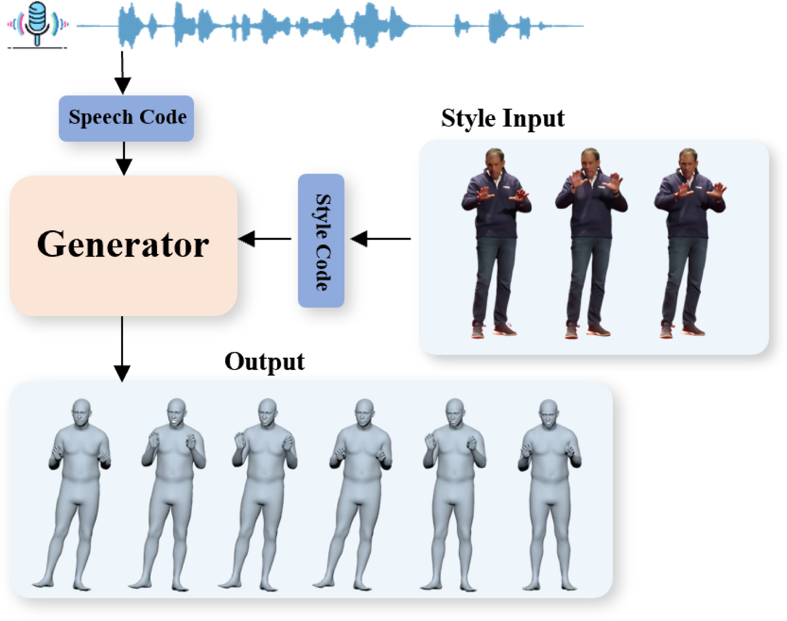
To achieve effective style guidance, we design a contrastive style encoder [14] that captures subtle differences between various gesture styles, learning discriminative style representations. Furthermore, we construct a unified 2D-3D style embedding space to leverage the abundant gesture data contained in videos, enabling direct style feature extraction from this readily available source. During the generation process, style information is integrated as a global condition with the noisy motion sequence at the token level, while classifier-free guidance is introduced during the sampling stage to ultimately produce stylized gestures.
In summary, our main contributions include:
· We propose a novel diffusion-based framework that generates holistic, stylized 3D co-speech motions, with the gesture styles extracted directly from in-the-wild videos.
· We propose a unified, rhythm-aware denoising network for 3D gestures and expressions based on an attention mechanism, and we introduce a novel alignment mask to ensure the generated motions are synchronized with the input speech.
· We develop a contrastive style encoder that effectively models discriminative 3D gesture representations without predefined style labels, coupled with a neural mapper that bridges 2D and 3D modalities in a unified style embedding space, allowing effective style transfer from videos to 3D co-speech motions.
2. Related work
2.1. Co-speech gesture generation
The goal of speech-driven gesture generation is to produce rhythmically consistent and diverse gestures from speech input. Early approaches [15-18] mainly rely on expert-designed rules, which are both time-consuming and labor-intensive. With the advancement of deep learning, subsequent research treats gesture generation as a regression problem [19,20]. However, such methods often lead to overly averaged and non-expressive gestures. To address this, researchers have turned to Generative Adversarial Networks (GANs) [21]. However, GAN-based gesture synthesis methods [12,22,23] suffer from training instability and mode collapse, compromising synthesis quality [24]. Recently, methods based on VQ-VAE [25] and diffusion models [26] have gained popularity. For example, DiffGesture [27] effectively captures the correlation between speech and gestures through a diffusion-based framework, generating high-fidelity gestures. Meanwhile, the LDA [28] model adapts the DiffWave [29] architecture for this task. To enhance semantic relevance, QPGesture [30] quantizes gestures using VQ-VAE and introduces a phase guidance mechanism for speech/text-gesture alignment.
Some works have focused solely on gesture generation [9,27,30] or facial expression generation [31-33], without considering holistic motion generation. With the recent advances in video-based human motion reconstruction [34-36] and motion-capture techniques [37], increasingly comprehensive and detailed co-speech motion datasets have become available [37-39], thereby broadening the scope of gesture generation to holistic motions. For instance, Habibie et al. [40] generate motions for different body parts using separate decoders. TalkSHOW [38] employs an autoencoder for facial expressions and a VQVAE for gestures. EMAGE [37] and Probtalk [11] divide the body into four parts - hands, upper body, lower body, and face - quantizing each with separate codebooks. By contrast, GestureLSM [41] is a flowmatching-based [42,43] approach that leverages spatio-temporal modeling to achieve high-quality, real-time co-speech human gesture generation. EchoMask [44] improves the quality of holistic co-speech motion generation through speech-guided masked modeling. SemTalk [45] emphasizes frame-level semantic expression, thereby enhancing the semantic richness of the generated results. CoCoGesture [39] further improves generalization by constructing a large-scale gesture dataset and training the model on this dataset. Mahapatra et al. [46] introduce a mesh-based video generator that transforms textured 3D meshes into realistic co-speech videos, thus improving the realism of the outputs.
For holistic and coordinated motion generation, in this work, we propose a rhythm-aware denoising network that ensures temporal alignment between the generated motions and the input speech. Moreover, we leverage Residual Quantized Variational Autoencoder (RVQVAE) [47] to build a latent space that captures a compact gesture prior, facilitating smooth transitions across gesture segments.
2.2. Style control for Co-speech gesture
Stylized gesture generation addresses the problem of controlling the style of generated gestures, allowing for the creation of motions that adhere to specific stylistic requirements as needed.
Some methods achieve style control through predefined attributes for style control. For example, CaMN [12] uses an embedding layer to encode speaker identity and combines it with a temporal convolutional network for emotion encoding. DiffuseStyleGesture [9] converts emotion labels into one-hot encodings to achieve style control under different emotions. More recently, Probtalk and DiffSHEG [10] inject speaker identity encodings into the generation model via AdaIN [48]. However, the performance of such methods is often limited by the difficulty in obtaining a sufficient volume of fine-grained style labels. To circumvent this limitation, AMUSE [49] disentangles speech into latent vectors representing content, emotion, and personal style. It then leverages a latent diffusion model to directly synthesize gestures with controllable emotions from the speech input. GestureDiffuCLIP [13] leverages CLIP [50] to extract style features from texts, example motion clips, or videos and injects them into the generative model via AdaIN. This process requires mapping video clips and speech transcripts into the shared CLIP embedding space. Nevertheless, CLIP functions as a single-frame image encoder, which inherently lacks the capacity to model temporal relationships between motion frames. Furthermore, the model faces an additional challenge in capturing abstract styles - such as professional demeanor in business settings - that are difficult to articulate verbally. In contrast, ZeroEGGS [5] is able to capture the stylistic features from example motion clips and generate corresponding gestures using Gated Recurrent Units (GRU), which provides relatively fast generation speed. MECo [51] instead leverages large language models to achieve co-speech gesture generation guided by motion examples.
![Fig. 2. Architecture of our proposed method. (a) The framework processes facial and gesture motions separately to enhance the expressiveness and facial generation quality, while maintaining audio-visual consistency through shared underlying speech features. Style features are token-wise concatenated with the noisy motion sequence to model gesture attributes. The aligned style embedding space further enables 2D keypoints from video to serve as style conditions, facilitating stylized gesture generation via the diffusion model. (b) The denoising network incorporates a self-attention module to effectively capture temporal dependencies within the motion sequence, as well as a cross-attention module to establish associations between speech and motion. Additionally, an alignment masking mechanism is introduced to ensure rhythmic consistency.](assets/figure-2.jpg)
Departing from these approaches, we propose a contrastive learning-based style encoder to directly extract discriminative representations from example gestures, eliminating the need for predefined labels or text descriptions of styles. Furthermore, to fully exploit the rich stylistic information in videos, we construct a shared 2D-3D style embedding space.
3. Method
Our framework generates holistic co-speech motions that are not only rhythmically aligned with the input speech but also consistent with the style of a given gesture clip. To this end, it integrates hierarchical speech encoder with a rhythm-aware denoising network to produce coordinated gesture and expression generation. For gesture representation, we employ an RVQ-VAE to construct a compact latent space. For style control, a contrastive style encoder extracts discriminative embeddings from gesture examples. These embeddings are then projected into a unified, shared latent space by a neural mapper, which aligns features from both 2D and 3D modalities, thereby enabling effective video-based style conditioning.
3.1. Problem formulation
Our method takes speech features 𝐴0∶𝑇 and a gestural style vector as input, and generates holistic motion animations based on the SMPL-X model [52]. The body gesture is represented by 6D representations [53] of 55 joints and a root translation R3 , while the facial expression is captured by R100 FLAME parameters.
Speech Representation. To ensure synchronization between generated facial expressions and gestures, we employ a HuBERT encoder for its high-quality speech representations, which have been shown to outperform traditional features like MFCC. We further introduce a hierarchical optimization strategy to leverage these representations effectively. Specifically, we freeze the CNN extractor and the first two Transformer layers to provide a shared, low-level feature base that promotes coordination. Meanwhile, the higher-level Transformer layers are fine-tuned to extract distinct, task-specific semantic features, which are separately tailored for facial expression and gesture generation.
Face Representation. The face representation is parameterized by the FLAME model, comprising 100-dimensional expression parameters along with a Rot6D representation for the jaw pose. These parameters collectively define the spatial configuration of a three-dimensional face mesh with 10,475 vertices.
Gesture Representation. The latent motion space learned through VQVAE [25] provides compact motion embeddings. However, its quantization process inevitably introduces errors [54]. In contrast, RVQVAE [47] reduces such errors progressively through multistage residual quantization. Therefore, we adopt an RVQ-VAE to learn the latent space of gestures. To enhance modeling fidelity, we explicitly account for the unique kinematics of different body parts by partitioning them into upper body, lower body, and hands, performing quantization separately for each part [37,55]. For each body part's motion sequence 𝐠1∶𝑁 ∈ R𝑁×𝐷 with 𝑁 frames and 𝐷 feature dimensions, the encoder first extracts a continuous latent representation 𝐳0 1∶𝑛 ∈ R𝑛×𝑑 with a downsampling ratio of 𝑛∕𝑁 and latent dimension 𝑑. As shown in Fig. 3, in the first quantization layer, each latent vector is replaced with the nearest code entry in a codebook = {𝑏𝑘}𝐾𝑘=1 ⊂ R𝑑 of size 𝐾 indexed by 𝑘, and the residual is further quantized by the subsequent quantization layers. Finally, the outputs of all quantization layers are summed and passed through the decoder to reconstruct the original gesture sequence. The training objective for this process is defined by the following loss function:

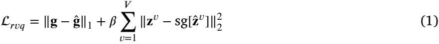
where sg[⋅] denotes the stop-gradient operation, and 𝛽 is a weighting factor for the embedding constraint. 𝐳𝑣 is the latent representation at layer 𝑣, and ̂𝐳𝑣 is its quantized result. Note that we employ RVQ-VAE exclusively for gesture representation, as it is found to be suboptimal for facial modeling (see Appendix).
3D Style Representation. Gestural styles vary across individuals. Some speakers habitually use both hands in front of their chest, while others prefer one-handed gestures. To achieve stylized generation, we train a contrastive learning-based style encoder, inspired by DiffPoseTalk [32], to extract style from example clips. This encoder is designed to capture nuanced stylistic characteristics from example clips by learning to distinguish between a diverse set of gesture styles, thereby ensuring that the control style is accurately preserved and reproduced during the generation process.
The architecture of our style encoder is shown in Fig. 4. Gesture clips are first processed by a Transformer encoder to extract style features, which are then aggregated via average pooling into a style embedding. Our method is motivated by the intuition that different individuals exhibit distinct gestural styles, and even the same person may gesture differently under varying emotions. During training, we use the NT-Xent [14] contrastive loss function. Each batch of 𝑁𝑠 samples is processed by splitting each sample into two segments, creating 𝑁𝑠 positive pairs. For each positive pair, the remaining 2(𝑁𝑠 - 1) samples in the batch serve as negative examples. The loss function is defined as follows:

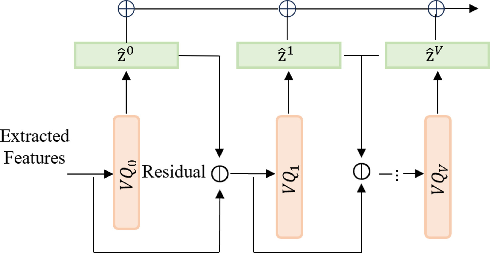

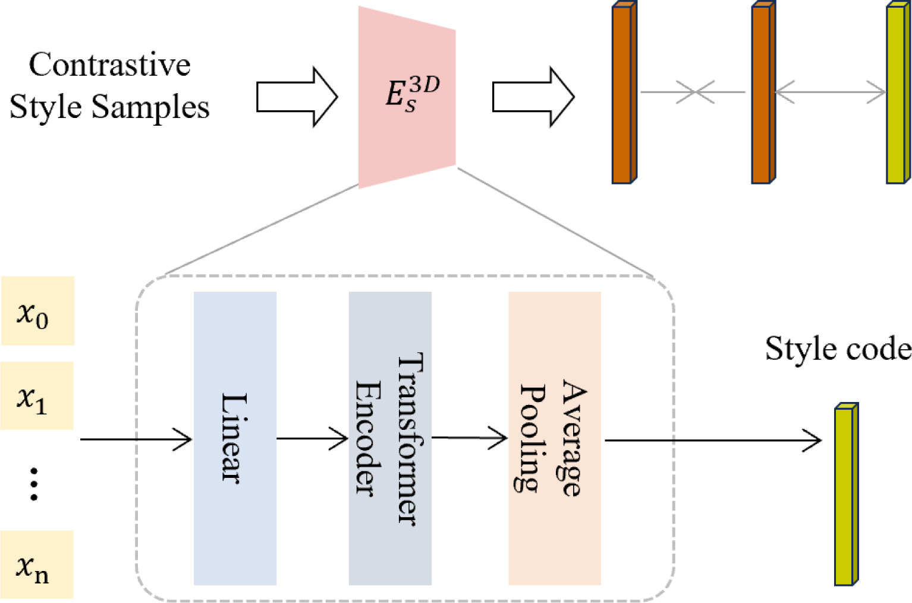

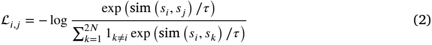
where 𝑠𝑖 and 𝑠𝑗 denote the style features of the positive pair 𝑖 and 𝑗, and 𝑘 represents the negative example. 1𝑘≠𝑖 is an indicator function, 𝜏 denotes the temperature parameter, and exp(⋅) represents the exponential function.
3.2. Stylized Co-speech gesture generation
Our framework achieves expressive motion generation by jointly modeling gestures and facial expressions, in line with prior work [38, 40,56]. Specifically, we process gestures and expressions using separate yet architecturally identical denoising network (Section 3.2.1), to ensure a coherent and realistic output. For effective video-based style control, we introduce a module that aligns 2D and 3D style features into a unified space. Finally, a style guidance strategy is incorporated into the diffusion model, ensuring the generated gestures are aligned with the target style.
3.2.1. Rhythm-aware denoising network
We employ the diffusion model [26] as the generative backbone for our co-speech stylized motion synthesis, leveraging its proven capacity to model complex, high-dimensional data distributions for high-quality and diverse outputs. The framework consists of a forward and a reverse process. In the forward process, Gaussian noise is gradually added to the initial data sample 𝑥0 via 𝑞(𝑥𝑡 ∣ 𝑥𝑡-1), yielding a noisy sequence 𝑥1, 𝑥2,…, 𝑥𝑇 , where 𝑇 is the total number of diffusion steps. The reverse process 𝑝𝜃(𝑥𝑡-1 ∣ 𝑥𝑡) employs a learned denoising network to iteratively recover the data from noise, thereby generating co-speech motions.
For motion representation, gestures and facial expressions are encoded as the concatenation of RVQ-VAE latent codes from different body parts and FLAME parameters (as detailed in Section 3.1), respectively. We employ a unified Transformer-based denoising network (Fig. 2), which consists of a speech encoder (Section 3.1) for extracting audio features 𝑎 and a decoder for predicting motion samples. The decoder integrates a self-attention module to capture temporal dependencies within the motion sequence, and a cross-attention module to establish speech-motion associations. Furthermore, an alignment masking mechanism [31] is introduced to ensure rhythmic consistency. Specifically, the mask is constructed as a binary matrix of size (𝑁 + 1) × 𝑁, where 𝑁 denotes the sequence length. The first row corresponds to the initial conditional input tokens 𝑐, which are composed of the diffusion time step 𝑡 and style features 𝑠 obtained from a contrastive style encoder (Section 3.1); this row is fully unmasked, allowing it to attend to all speech features. For each subsequent motion position, the motion data at position 𝑛 attends only to the corresponding audio feature 𝐴𝑛, thereby achieving temporal alignment. For both gesture and expression generation, we apply the following loss to the reconstructed sample ̂𝑥0 = 𝐷(𝑥𝑡, 𝑡, 𝑎, 𝑠):

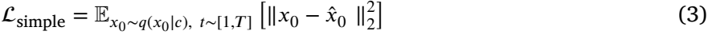
where 𝐷(⋅) denotes the denoising network, 𝑠 is the style code and 𝑡 represents the timestep of the diffusion model.
To achieve more effective control over facial expressions, we convert FLAME parameters into 3D mesh sequences and introduce a vertex error loss, a velocity consistency loss, and a smoothness term to suppress abrupt acceleration changes at the vertex positions:

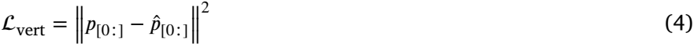

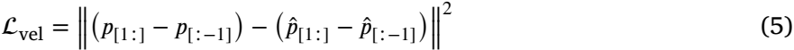

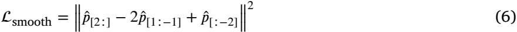
The total loss for facial motions is:

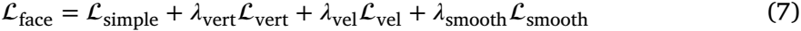
where 𝜆vert, 𝜆vel, and 𝜆smooth are the weighting coefficients, while 𝑝𝑛 and ̂ 𝑝𝑛 denote the ground-truth and predicted 3D facial mesh vertex positions, respectively, and 𝑛 indexes the frame in a sequence of length 𝑁.
3.2.2. 2D-3D style alignment
Videos provide a vastly diverse and scalable repository of gestural styles [57]. To leverage this resource, we project style features from both 3D gestures and their 2D projections into a joint embedding space, inspired by cross-modal alignment techniques [57,58]. Specifically, we train a 2D style encoder to match the embeddings from the frozen, pre-trained 3D style encoder, minimizing the distance between their outputs for corresponding pairs:

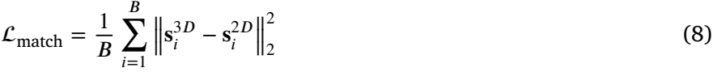
where 𝑠3𝐷 𝑖 and 𝑠2𝐷 𝑖 denote the style features extracted from the 3D and 2D representations of the same motion clip, respectively, and 𝐵 represents the batch size. Once trained, the 2D encoder can extract style directly from in-the-wild videos to control our diffusion-based gesture generator.
While the matching loss in Eq. (8) aligns paired 2D and 3D style inputs in the joint embedding space, it does not inherently ensure that the gestures generated from 2D conditions are realistic and plausible. To bridge this gap, we introduce a 2D-conditioned sample reconstruction loss:

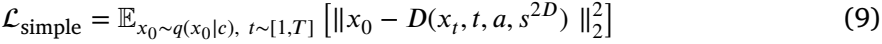
this loss function leverages a denoising model pre-trained on 3D style conditions, reconstructing corresponding 3D motions by injecting 2D style features into the model, thereby further constraining the learning of the style encoder.
The overall loss for aligning the style embedding space is as follows:

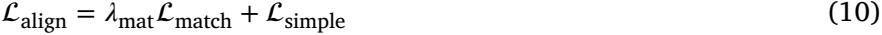
thus, our approach not only aligns style features across modalities but also ensures that 2D style features can produce natural and coherent gesture motions from the diffusion model.
3.2.3. Style guidance
Style, as a global and abstract condition, characterizes the overall attributes of a generated gesture segment. To incorporate style information, we first apply a linear projection to the style features, and combine them with the timestep embedding, to form conditional input tokens 𝑐. These tokens are then concatenated with the noisy motion sequence at the token level and processed by the denoising network. This conditioning strategy strikes a balance between enforcing a unified style throughout the generated segment and preserving the local, speech-synchronized dynamics.
Classifier-free diffusion guidance [59] enables flexible conditional control, typically by randomly replacing condition vectors with null embeddings. Inspired by this approach, we introduce random masking on both speech and style features to perform classifier-free learning. The denoising network then makes predictions under different condition combinations, and the results are fused through weighted aggregation to obtain clean samples. These samples are further used in the sampling process, ultimately generating gesture motions that not only match the target style but also maintain rhythmic consistency. The process is detailed as follows:

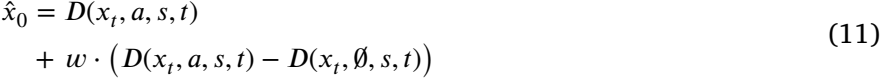
where 𝑤 is the condition guidance scale.
4. Experiments
In this section, we present a comprehensive evaluation of our method through extensive experiments and comparisons.
4.1. Experimental setup
Dataset. Our experiments are based on the BEAT2 [37], a large-scale, multi-modal co-speech motion dataset. It offers 60 h of SMPL-X data from 30 speakers across 8 emotions and 4 languages. Following [2,37, 41], our diffusion model is trained on approximately 1.46 h of English data from Speaker2. The 3D style encoder is trained on an expanded 3.85-hour subset of the BEAT2 dataset that includes a wide range of speakers and emotions, thereby enhancing its capacity to model nuanced stylistic differences.
Implementation Details. The RVQ-VAE employs a 6-layer quantization module with a downsampling rate of 4 and a codebook size of 512. Both the encoder and decoder of the RVQ-VAE are implemented with 1D convolutional architectures. For the denoising network, we use an 8-layer Transformer decoder with hidden size 512 and 8 attention heads. Motion data is segmented into 120-frame clips (4 s at 30 fps), with 10-frame seed gestures. The diffusion process uses 500 denoising steps. For the stylized gesture generation, the style encoder consists of a 6-layer Transformer encoder with 512-dimensional features. Training is conducted with batch size 16 using the Adam optimizer for 190,000 iterations, requiring approximately 13 h on an NVIDIA L20 GPU.

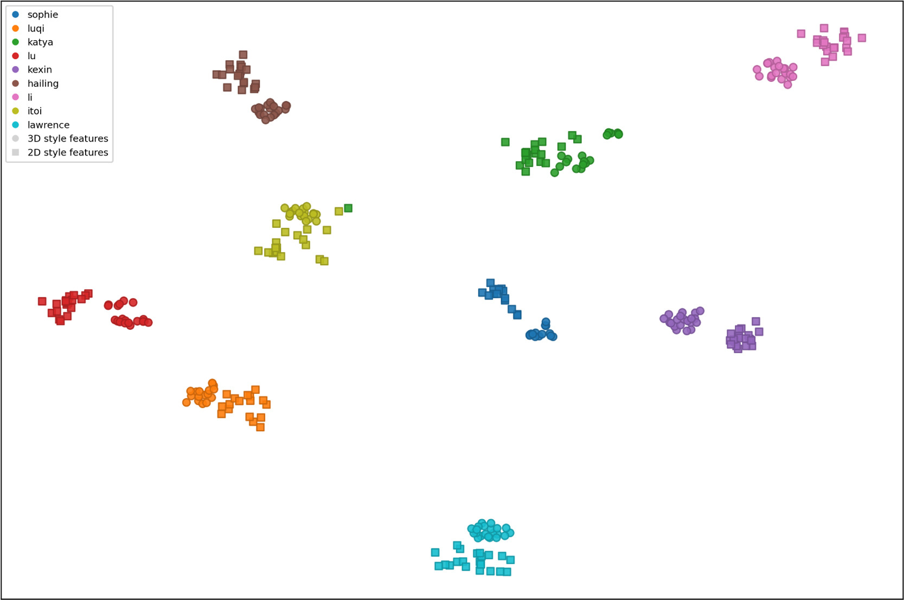
Baselines. To maintain consistency with other works [12,37,41,55], the following baselines are compared on the BEAT2 dataset (Speaker2): (1) gesture generation with example-based style input, represented by ZeroEGGS [5]; (2) methods without example-based style input, which include gesture-only generation methods (e.g., CaMN [12], DiffStyleGesture [9], Syntalker [55]) and holistic motion generation methods (e.g., TalkSHOW [38], EMAGE [37], GestureLSM [41]); and (3) talking head generation (e.g., FaceFormer [31], DiffPoseTalk [32], MSMD [33]).
For a fair comparison, all gesture generation methods are adapted to the full-body generation task (without face animation). For CaMN [12], we omit the adversarial training, as EMAGE [37] has reported that it introduces noticeable jitter on the BEAT2 dataset. We extend Syntalker [55] by incorporating the jaw joint into the upper body, and augment TalkSHOW [38] with a lower-body VQ-VAE, as its original implementation only covers the upper body. GestureLSM [41] is evaluated in its full-body generation setting. Moreover, style features for our method and ZeroEGGS are extracted from their respective pre-trained encoders, which are trained on the same multi-speaker, multi-emotion data.
4.2. Style embedding visualization
First, we visualize several generated gesture samples conditioned on style inputs in Figs. 6 and 7. Full motion sequences are provided in the supplementary video. Our results confirm that the proposed system successfully achieves style control using diverse input sources, including 3D animated characters, 2D projections of 3D motions, and real-world videos-within a unified framework. This style control stems from our neural mapper, which effectively aligns 2D and 3D gesture features into a shared style space. We validate this alignment by visualizing style embeddings from unseen motion clips of different speakers via t-SNE [60]. The resulting plot (Fig. 5) shows clear clustering by individual, with their 2D and 3D style features located in close proximity. This well-structured embedding space enables video-based style control, as qualitatively demonstrated in Fig. 7.
4.3. Quantitative evaluation
We employ several metrics to evaluate our method. Fréchet Gesture Distance (FGD) [61] quantifies the distributional similarity between real and generated gestures, with lower values indicating better fidelity. Diversity [24] is computed as the average L1 distance between joint positions across multiple segments to assess generation variety. Beat Constancy (BC) [62] evaluates audio-gesture synchronization by measuring the coincidence of motion and audio beats. However, a higher BC score does not necessarily indicate better performance, as it can be inflated by motion jitter or outliers [10]. Therefore, we use the deviation from the ground-truth BC as the evaluation criterion, where lower values indicate better performance. For facial expressions, we report both the Mean Squared Error (MSE) [63] of vertex positions and the L1 Vertex Difference (LVD) [38] to quantify geometric accuracy. Details of the quantitative evaluation metrics are provided in the supplementary material.

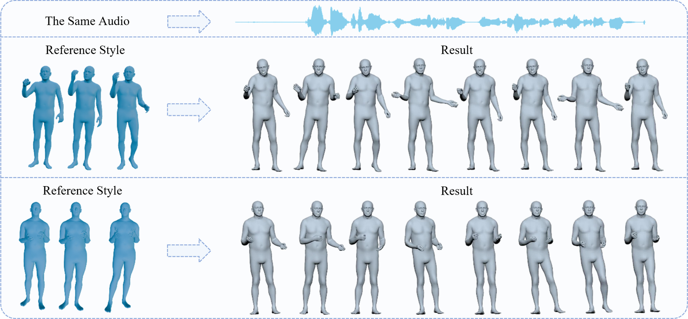

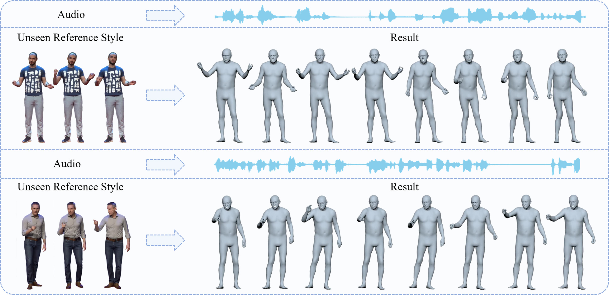
As shown in Table 1, our proposed method outperforms all baseline models on motion quality metrics. Specifically, it achieves superior performance in terms of diversity, indicating an enhanced capacity for generating expressive gestures. It also achieves a BC value closest to the ground truth, demonstrating its ability to generate motions that are both natural and rhythmically coherent with the speech. Moreover, our method achieves the lowest FGD, confirming its superior ability to capture the data distribution and generate realistic, diverse gestures. In contrast, ZeroEGGS underperforms on both FGD and diversity metrics, likely due to its reliance on recurrent neural networks, which inherently limits its capacity to model complex gesture distributions compared to generative approaches like diffusion models. For facial expressions, our method achieves the best results in terms of both MSE and LVD. In particular, the relatively poor performance of FaceFormer may be attributed to the error accumulation inherent in autoregressive generation.
4.4. Qualitative evaluation
As shown in Fig. 8, when provided with a style reference, our method generates gestures that are not only natural and diverse but also faithfully preserve the distinctive characteristics of the target style.

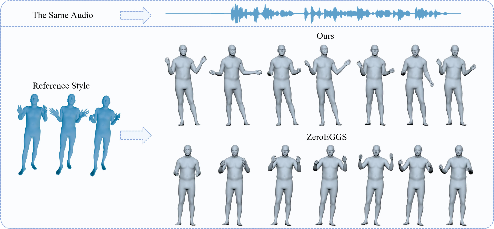

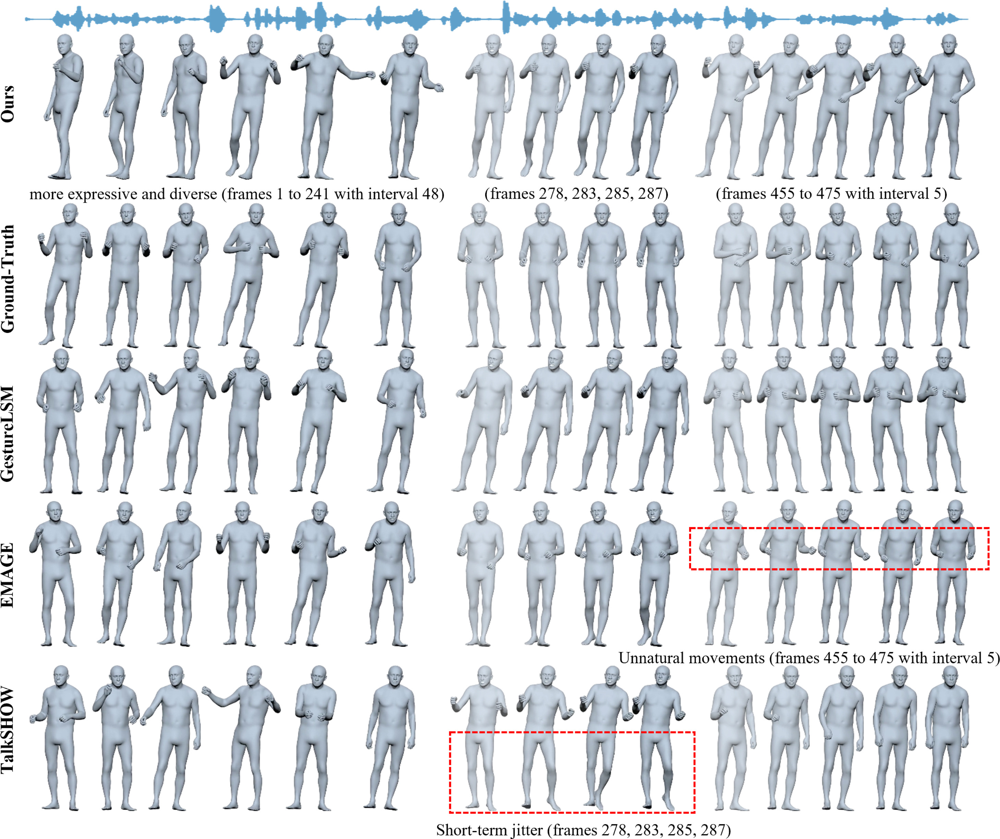
In contrast, while ZeroEGGS captures some stylistic traits, its outputs lack vividness (Fig. 8). Without style control, our method (Figs. 9 and 10) produces gestures with smooth motion and strong expressiveness, which are well-coordinated with body and head movements to form a coherent holistic performance. Compared to our results, other methods exhibit various artifacts: CaMN generates sluggish motions, TalkSHOW shows noticeable jitter, DiffStyleGesture suffers from abrupt transitions between segments, and EMAGE produces redundant and unnatural movements (Figs. 9 and 10). Detailed visualizations of the results are provided in the supplementary video.

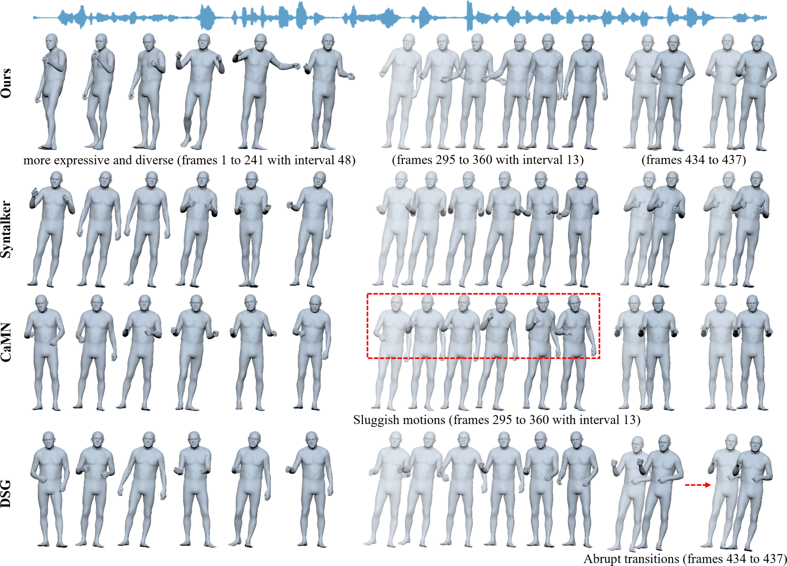

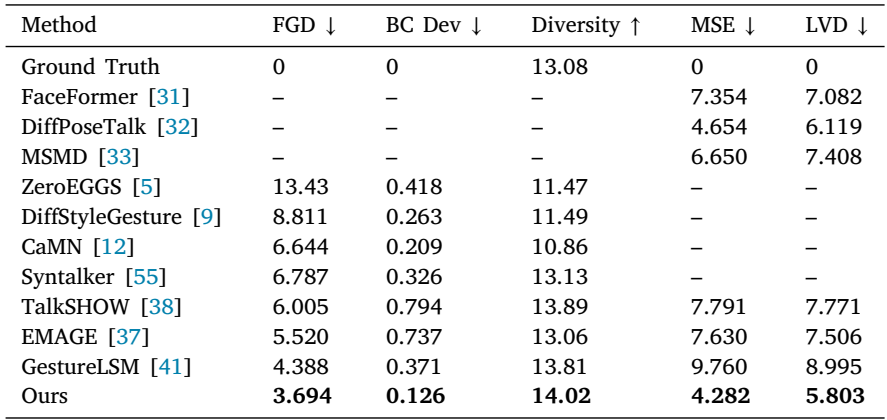
Recognized table text (check against the image)
| Method | FGD ↓ | BC Dev ↓ | Diversity ↑ | MSE ↓ | LVD ↓ |
|---|---|---|---|---|---|
| Ground Truth | 0 | 0 | 13.08 | 0 | 0 |
| FaceFormer [31] | - | - | - | 7.354 | 7.082 |
| DiffPoseTalk [32] | - | - | - | 4.654 | 6.119 |
| MSMD [33] | - | - | - | 6.650 | 7.408 |
| ZeroEGGS [5] | 13.43 | 0.418 | 11.47 | - | - |
| DiffStyleGesture [9] | 8.811 | 0.263 | 11.49 | - | - |
| CaMN [12] | 6.644 | 0.209 | 10.86 | - | - |
| Syntalker [55] | 6.787 | 0.326 | 13.13 | - | - |
| TalkSHOW [38] | 6.005 | 0.794 | 13.89 | 7.791 | 7.771 |
| EMAGE [37] | 5.520 | 0.737 | 13.06 | 7.630 | 7.506 |
| GestureLSM [41] | 4.388 | 0.371 | 13.81 | 9.760 | 8.995 |
| Ours | 3.694 | 0.126 | 14.02 | 4.282 | 5.803 |

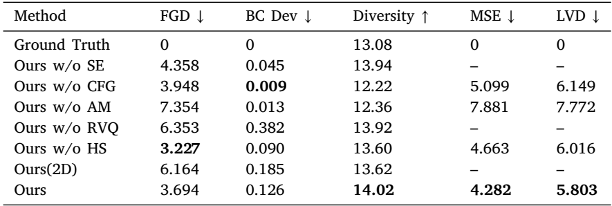
Recognized table text (check against the image)
| Method | FGD ↓ | BC Dev ↓ | Diversity ↑ | MSE ↓ | LVD ↓ |
|---|---|---|---|---|---|
| Ground Truth | 0 | 0 | 13.08 | 0 | 0 |
| Ours w/o SE | 4.358 | 0.045 | 13.94 | - | - |
| Ours w/o CFG | 3.948 | 0.009 | 12.22 | 5.099 | 6.149 |
| Ours w/o AM | 7.354 | 0.013 | 12.36 | 7.881 | 7.772 |
| Ours w/o RVQ | 6.353 | 0.382 | 13.92 | - | - |
| Ours w/o HS | 3.227 | 0.090 | 13.60 | 4.663 | 6.016 |
| Ours(2D) | 6.164 | 0.185 | 13.62 | - | - |
| Ours | 3.694 | 0.126 | 14.02 | 4.282 | 5.803 |
4.5. Ablation study
We conduct ablation experiments on the BEAT2 dataset. Here, ''Ours'' denotes the variant that uses style features extracted by the 3D style encoder for gesture generation. Taking ''Ours'' as the reference model, we remove the following key components separately: (1) style encoder (w/o SE); (2) classifier-free guidance (w/o CFG); (3) alignment mask (w/o AM); (4) RVQ-VAE (w/o RVQ); (5) hierarchical speech encoder (w/o HS). As shown in Table 2, ''Ours'' achieves the best overall performance, while removing any component leads to noticeable degradation. Specifically, removing the style encoder (w/o SE) results in a decline across all metrics, confirming its crucial role in capturing distinctive stylistic features that enhance gesture quality. Eliminating classifier-free guidance (w/o CFG) reduces diversity of generated gestures and the quality of facial expressions, as this mechanism prevents over-reliance on conditional inputs and encourages more expressive variations. The alignment mask is important for improving quality and diversity, as it enforces temporal correspondence between speech features and gesture timing, ensuring better speechmotion synchronization. The absence of the alignment mask (w/o AM) results in a pronounced loss of rhythmic consistency with the audio and a degradation in naturalness for both gestures and facial expressions. Furthermore, the compact representation learned by RVQ-VAE substantially contributes to the overall gesture naturalness and coherence. Removing the RVQ-VAE (w/o RVQ), severely compromises generation quality. Replacing the hierarchical speech encoder with a fully frozen HuBERT encoder (w/o HS) results in a decline in both the quality of facial generation and the diversity of gestures. This is because the fully frozen HuBERT encoder fails to provide task-optimized speech features and struggles to adapt to subtle variations in holistic motions, thereby compromising the overall generation quality. In addition, to evaluate the effectiveness of the neural mapper, we further assess a variant denoted as ''Ours(2D)'', which uses style features extracted by the 2D style encoder.

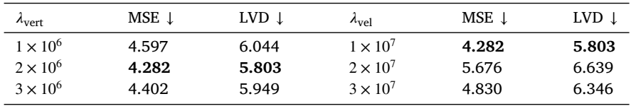
Recognized table text (check against the image)
| 𝜆vert | MSE ↓ | LVD ↓ | 𝜆vel | MSE ↓ | LVD ↓ |
|---|---|---|---|---|---|
| 1 × 106 | 4.597 | 6.044 | 1 × 107 | 4.282 | 5.803 |
| 2 × 106 | 4.282 | 5.803 | 2 × 107 | 5.676 | 6.639 |
| 3 × 106 | 4.402 | 5.949 | 3 × 107 | 4.830 | 6.346 |
Although ''Ours(2D)'' does not perform as well as ''Ours'', it still achieves competitive results, indicating that the proposed neural mapper can effectively align 2D and 3D style representations and provide reliable style guidance for gesture generation. In particular, its FGD result suggests that the generated results are close to the groundtruth distribution and exhibit stylistic characteristics similar to those of the ground truth.
4.6. Sensitivity of facial loss weights
We evaluate the impact of the two key weights in the facial loss, 𝜆vert and 𝜆vel. By default, 𝜆vert = 2×106 and 𝜆vel = 1×107 . While keeping all other hyperparameters unchanged, we vary these two weights relative to their default values. Specifically, for 𝜆vert, we test {1 × 106 , 2×106 , 3×106 }, and for 𝜆vel, we test {1×107 , 2×107 , 3×107 }. As shown in Table 3, varying 𝜆vert has only a limited effect on the overall performance. Moreover, changes in 𝜆vel lead to larger variations in the evaluation metrics, indicating that the model is more sensitive to 𝜆vel.
4.7. User study
To evaluate the perceptual quality of our method, we conduct a user study. The study assesses three key aspects, similar to prior works [9, 13]: Human-Likeness (whether motions appear natural), GestureSpeech Appropriateness (synchronization with speech rhythm), and Gesture-Style Appropriateness (style consistency with the example). Twenty participants are presented with multiple 8-10 s videos of the same speech segment generated by different methods. Then, they rate each video on a 5-point Likert scale (1 = lowest, 5 = highest) for each aspect. Further details regarding the user study are provided in the supplementary material.
For methods that do not utilize example motions as style input, we omit the gesture-style appropriateness evaluation. Under this setting (without the style encoder), we compare our approach with two state-of-the-art methods, EMAGE and GestureLSM. Participants evaluate ten sets of videos, each containing four clips of the same speech: ours, EMAGE, GestureLSM, and ground truth. As shown in Table 4, our method achieves higher average scores in human-likeness and gesturespeech appropriateness, outperforming both baselines and producing results closer to the ground truth.
For the style-based generation setting, we compare our method against ZeroEGGS across all three perceptual aspects. Participants evaluate ten video sets, each containing outputs from both methods conditioned on the same style example. For gesture-style appropriateness assessment, the reference example motion is displayed alongside the generated results. Our method outperforms ZeroEGGS across all evaluation dimensions. It is worth noting that our style-conditioned version yields slightly lower human-likeness and speech-appropriateness scores than our non-style version, which we attribute to the exclusion of facial expressions to ensure a fair comparison with ZeroEGGS.

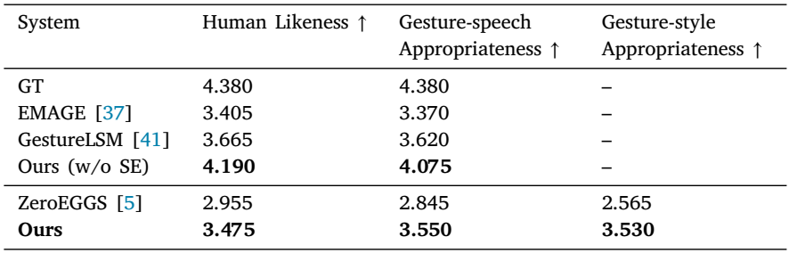
Recognized table text (check against the image)
| System | Human Likeness ↑ | Gesture-speech Appropriateness ↑ | Gesture-style Appropriateness ↑ |
|---|---|---|---|
| GT | 4.380 | 4.380 | - |
| EMAGE [37] | 3.405 | 3.370 | - |
| GestureLSM [41] | 3.665 | 3.620 | - |
| Ours (w/o SE) | 4.190 | 4.075 | - |
| ZeroEGGS [5] | 2.955 | 2.845 | 2.565 |
| Ours | 3.475 | 3.550 | 3.530 |
5. Conclusion
In this work, we propose a novel diffusion-based framework for stylized co-speech motion generation. The approach utilizes hierarchical speech encoding and rhythm-aware denoising mechanisms to generate holistic and rhythmically aligned motions. By incorporating a contrastive learning-based style encoder, our model effectively learns discriminative style representations from gesture exemplars. Furthermore, the proposed neural mapper aligns 2D and 3D motion style features into a shared embedding space, enabling style feature extraction directly from 2D motion information in videos. During inference, global style features are fused with the noisy motion sequence at the token level, and a classifier-free guidance mechanism is introduced in the sampling stage, achieving diverse and controllable stylized generation without relying on costly motion labels. Extensive experiments and user studies demonstrate that our method achieves state-of-the-art performance in motion quality, style consistency, and naturalness.
CRediT authorship contribution statement
Yayu Zhang: Writing - original draft, Visualization, Validation, Methodology, Investigation. Yu-Hui Wen: Writing - review & editing, Supervision, Resources, Methodology, Funding acquisition, Conceptualization. Chenguang Li: Writing - original draft, Investigation. Liping Jing: Writing - review & editing, Supervision, Funding acquisition. Jian Yu: Writing - review & editing, Supervision, Funding acquisition.
Declaration of competing interest
The authors declare that they have no known competing financial interests or personal relationships that could have appeared to influence the work reported in this paper.
Acknowledgment
This work was partly supported by the National Natural Science Foundation of China (Grant Nos. 62536001, 62436001, and 62176020); the Young Elite Scientists Sponsorship Program of the Beijing High Innovation Plan (20250978); and the Science and Technology Plan Project of Beijing (Z231100005923029).
Appendix A. Supplementary data
Supplementary material related to this article can be found online at https://doi.org/10.1016/j.gmod.2026.101332. Read the supplementary material in HTML.
Data availability
Data will be made available on request.
References
[1] D. McNeill, Hand and mind: What gestures reveal about thought, University of Chicago Press, 1992.
[2] X. Zhang, J. Li, J. Zhang, Z. Dang, J. Ren, L. Bo, Z. Tu, SemTalk: Holistic co-speech motion generation with frame-level semantic emphasis, 2024, arXiv preprint arXiv:2412.16563.
[3] S. Nyatsanga, T. Kucherenko, C. Ahuja, G.E. Henter, M. Neff, A comprehensive review of data-driven co-speech gesture generation, in: Computer Graphics Forum, vol. 42, (2) Wiley Online Library, 2023, pp. 569-596.
[4] Z. Zhang, T. Ao, Y. Zhang, Q. Gao, C. Lin, B. Chen, L. Liu, Semantic gesticulator: Semantics-aware co-speech gesture synthesis, ACM Trans. Graph. 43 (4) (2024) 1-17.
[5] S. Ghorbani, Y. Ferstl, D. Holden, N.F. Troje, M.-A. Carbonneau, Zeroeggs: Zero-shot example-based gesture generation from speech, in: Computer Graphics Forum, vol. 42, Wiley Online Library, 2023, pp. 206-216.
[6] S. Ye, Y.-H. Wen, Y. Sun, Y. He, Z. Zhang, Y. Wang, W. He, Y.-J. Liu, Audio-driven stylized gesture generation with flow-based model, in: European Conference on Computer Vision, Springer, 2022, pp. 712-728.
[7] M. Koppensteiner, K. Grammer, Motion patterns in political speech and their influence on personality ratings, J. Res. Pers. 44 (3) (2010) 374-379.
[8] H.J. Smith, M. Neff, Understanding the impact of animated gesture performance on personality perceptions, ACM Trans. Graph. 36 (4) (2017) 1-12.
[9] S. Yang, Z. Wu, M. Li, Z. Zhang, L. Hao, W. Bao, M. Cheng, L. Xiao, Diffusestylegesture: Stylized audio-driven co-speech gesture generation with diffusion models, 2023, arXiv preprint arXiv:2305.04919.
[10] J. Chen, Y. Liu, J. Wang, A. Zeng, Y. Li, Q. Chen, Diffsheg: A diffusionbased approach for real-time speech-driven holistic 3d expression and gesture generation, in: Proceedings of the IEEE/CVF Conference on Computer Vision and Pattern Recognition, 2024, pp. 7352-7361.
[11] Y. Liu, Q. Cao, Y. Wen, H. Jiang, C. Ding, Towards variable and coordinated holistic co-speech motion generation, in: Proceedings of the IEEE/CVF Conference on Computer Vision and Pattern Recognition, 2024, pp. 1566-1576.
[12] H. Liu, Z. Zhu, N. Iwamoto, Y. Peng, Z. Li, Y. Zhou, E. Bozkurt, B. Zheng, Beat: A large-scale semantic and emotional multi-modal dataset for conversational gestures synthesis, in: European Conference on Computer Vision, Springer, 2022, pp. 612-630.
[13] T. Ao, Z. Zhang, L. Liu, Gesturediffuclip: Gesture diffusion model with clip latents, ACM Trans. Graph. 42 (4) (2023) 1-18.
[14] T. Chen, S. Kornblith, M. Norouzi, G. Hinton, A simple framework for contrastive learning of visual representations, in: International Conference on Machine Learning, PmLR, 2020, pp. 1597-1607.
[15] J. Cassell, C. Pelachaud, N. Badler, M. Steedman, B. Achorn, T. Becket, B. Douville, S. Prevost, M. Stone, Animated conversation: rule-based generation of facial expression, gesture & spoken intonation for multiple conversational agents, in: Proceedings of the 21st Annual Conference on Computer Graphics and Interactive Techniques, 1994, pp. 413-420.
[16] J. Cassell, H.H. Vilhjálmsson, T. Bickmore, Beat: the behavior expression animation toolkit, in: Proceedings of the 28th Annual Conference on Computer Graphics and Interactive Techniques, 2001, pp. 477-486.
[17] M. Kipp, Gesture generation by imitation: From human behavior to computer character animation, Universal-Publishers, 2005.
[18] S. Kopp, B. Krenn, S. Marsella, A.N. Marshall, C. Pelachaud, H. Pirker, K.R. Thórisson, H. Vilhjálmsson, Towards a common framework for multimodal generation: The behavior markup language, in: International Workshop on Intelligent Virtual Agents, Springer, 2006, pp. 205-217.
[19] T. Kucherenko, D. Hasegawa, G.E. Henter, N. Kaneko, H. Kjellström, Analyzing input and output representations for speech-driven gesture generation, in: Proceedings of the 19th ACM International Conference on Intelligent Virtual Agents, 2019, pp. 97-104.
[20] K. Takeuchi, D. Hasegawa, S. Shirakawa, N. Kaneko, H. Sakuta, K. Sumi, Speechto-gesture generation: A challenge in deep learning approach with bi-directional LSTM, in: Proceedings of the 5th International Conference on Human Agent Interaction, 2017, pp. 365-369.
[21] I. Goodfellow, J. Pouget-Abadie, M. Mirza, B. Xu, D. Warde-Farley, S. Ozair, A. Courville, Y. Bengio, Generative adversarial networks, Commun. ACM 63 (11) (2020) 139-144.
[22] S. Ginosar, A. Bar, G. Kohavi, C. Chan, A. Owens, J. Malik, Learning individual styles of conversational gesture, in: Proceedings of the IEEE/CVF Conference on Computer Vision and Pattern Recognition, 2019, pp. 3497-3506.
[23] H. Liu, N. Iwamoto, Z. Zhu, Z. Li, Y. Zhou, E. Bozkurt, B. Zheng, Disco: Disentangled implicit content and rhythm learning for diverse co-speech gestures synthesis, in: Proceedings of the 30th ACM International Conference on Multimedia, 2022, pp. 3764-3773.
[24] J. Li, D. Kang, W. Pei, X. Zhe, Y. Zhang, Z. He, L. Bao, Audio2gestures: Generating diverse gestures from speech audio with conditional variational autoencoders, in: Proceedings of the IEEE/CVF International Conference on Computer Vision, 2021, pp. 11293-11302.
[25] A. Van Den Oord, O. Vinyals, et al., Neural discrete representation learning, Adv. Neural Inf. Process. Syst. 30 (2017).
[26] J. Ho, A. Jain, P. Abbeel, Denoising diffusion probabilistic models, Adv. Neural Inf. Process. Syst. 33 (2020) 6840-6851.
[27] L. Zhu, X. Liu, X. Liu, R. Qian, Z. Liu, L. Yu, Taming diffusion models for audiodriven co-speech gesture generation, in: Proceedings of the IEEE/CVF Conference on Computer Vision and Pattern Recognition, 2023, pp. 10544-10553.
[28] S. Alexanderson, R. Nagy, J. Beskow, G.E. Henter, Listen, denoise, action! audiodriven motion synthesis with diffusion models, ACM Trans. Graph. 42 (4) (2023) 1-20.
[29] Z. Kong, W. Ping, J. Huang, K. Zhao, B. Catanzaro, Diffwave: A versatile diffusion model for audio synthesis, 2020, arXiv preprint arXiv:2009.09761.
[30] S. Yang, Z. Wu, M. Li, Z. Zhang, L. Hao, W. Bao, H. Zhuang, Qpgesture: Quantization-based and phase-guided motion matching for natural speech-driven gesture generation, in: Proceedings of the IEEE/CVF Conference on Computer Vision and Pattern Recognition, 2023, pp. 2321-2330.
[31] Y. Fan, Z. Lin, J. Saito, W. Wang, T. Komura, Faceformer: Speech-driven 3d facial animation with transformers, in: Proceedings of the IEEE/CVF Conference on Computer Vision and Pattern Recognition, 2022, pp. 18770-18780.
[32] Z. Sun, T. Lv, S. Ye, M. Lin, J. Sheng, Y.-H. Wen, M. Yu, Y.-j. Liu, Diffposetalk: Speech-driven stylistic 3d facial animation and head pose generation via diffusion models, ACM Trans. Graph. 43 (4) (2024) 1-9.
[33] Y. Pan, K. Singh, L.G. Hafemann, Model see model do: Speech-driven facial animation with style control, in: Proceedings of the Special Interest Group on Computer Graphics and Interactive Techniques Conference Conference Papers, 2025, pp. 1-10.
[34] H. Zhang, Y. Tian, Y. Zhang, M. Li, L. An, Z. Sun, Y. Liu, Pymaf-x: Towards wellaligned full-body model regression from monocular images, IEEE Trans. Pattern Anal. Mach. Intell. 45 (10) (2023) 12287-12303.
[35] Y. Feng, V. Choutas, T. Bolkart, D. Tzionas, M.J. Black, Collaborative regression of expressive bodies using moderation, in: 2021 International Conference on 3D Vision (3DV), IEEE, 2021, pp. 792-804.
[36] Z. Tu, Z. Huang, Y. Chen, D. Kang, L. Bao, B. Yang, J. Yuan, Consistent 3d hand reconstruction in video via self-supervised learning, IEEE Trans. Pattern Anal. Mach. Intell. 45 (8) (2023) 9469-9485.
[37] H. Liu, Z. Zhu, G. Becherini, Y. Peng, M. Su, Y. Zhou, X. Zhe, N. Iwamoto, B. Zheng, M.J. Black, Emage: Towards unified holistic co-speech gesture generation via expressive masked audio gesture modeling, in: Proceedings of the IEEE/CVF Conference on Computer Vision and Pattern Recognition, 2024, pp. 1144-1154.
[38] H. Yi, H. Liang, Y. Liu, Q. Cao, Y. Wen, T. Bolkart, D. Tao, M.J. Black, Generating holistic 3d human motion from speech, in: Proceedings of the IEEE/CVF Conference on Computer Vision and Pattern Recognition, 2023, pp. 469-480.
[39] X. Qi, H. Zhang, Y. Wang, J. Pan, C. Liu, M. Sun, W. Xue, S. Zhang, S. Han, Q. Liu, et al., CoCoGesture: Towards coherent co-speech 3D gesture generation in the wild, Inf. Fusion (2025) 103613.
[40] I. Habibie, W. Xu, D. Mehta, L. Liu, H.-P. Seidel, G. Pons-Moll, M. Elgharib, C. Theobalt, Learning speech-driven 3d conversational gestures from video, in: Proceedings of the 21st ACM International Conference on Intelligent Virtual Agents, 2021, pp. 101-108.
[41] P. Liu, L. Song, J. Huang, H. Liu, C. Xu, GestureLSM: Latent shortcut based co-speech gesture generation with spatial-temporal modeling, in: Proceedings of the IEEE/CVF International Conference on Computer Vision, 2025, pp. 10929-10939.
[42] Y. Lipman, R.T. Chen, H. Ben-Hamu, M. Nickel, M. Le, Flow matching for generative modeling, 2022, arXiv preprint arXiv:2210.02747.
[43] X. Liu, C. Gong, Q. Liu, Flow straight and fast: Learning to generate and transfer data with rectified flow, 2022, arXiv preprint arXiv:2209.03003.
[44] X. Zhang, J. Li, J. Zhang, J. Ren, L. Bo, Z. Tu, Echomask: Speech-queried attention-based mask modeling for holistic co-speech motion generation, in: Proceedings of the 33rd ACM International Conference on Multimedia, 2025, pp. 10827-10836.
[45] X. Zhang, J. Li, J. Zhang, Z. Dang, J. Ren, L. Bo, Z. Tu, Semtalk: Holistic cospeech motion generation with frame-level semantic emphasis, in: Proceedings of the IEEE/CVF International Conference on Computer Vision, 2025, pp. 13761-13771.
[46] A. Mahapatra, R. Mishra, R. Li, Z. Chen, B. Ding, S. Wang, J.-Y. Zhu, P. Chang, M. Han, J. Xiao, Co-speech gesture video generation with 3d human meshes, in: European Conference on Computer Vision, Springer, 2024, pp. 172-189.
[47] D. Lee, C. Kim, S. Kim, M. Cho, W.-S. Han, Autoregressive image generation using residual quantization, in: Proceedings of the IEEE/CVF Conference on Computer Vision and Pattern Recognition, 2022, pp. 11523-11532.
[48] X. Huang, S. Belongie, Arbitrary style transfer in real-time with adaptive instance normalization, in: Proceedings of the IEEE International Conference on Computer Vision, 2017, pp. 1501-1510.
[49] K. Chhatre, N. Athanasiou, G. Becherini, C. Peters, M.J. Black, T. Bolkart, et al., Emotional speech-driven 3d body animation via disentangled latent diffusion, in: Proceedings of the IEEE/CVF Conference on Computer Vision and Pattern Recognition, 2024, pp. 1942-1953.
[50] A. Radford, J.W. Kim, C. Hallacy, A. Ramesh, G. Goh, S. Agarwal, G. Sastry, A. Askell, P. Mishkin, J. Clark, et al., Learning transferable visual models from natural language supervision, in: International Conference on Machine Learning, PmLR, 2021, pp. 8748-8763.
[51] B. Chen, Y. Li, Y. Zheng, Y.-X. Ding, K. Zhou, Motion-example-controlled cospeech gesture generation leveraging large language models, in: Proceedings of the Special Interest Group on Computer Graphics and Interactive Techniques Conference Conference Papers, 2025, pp. 1-12.
[52] G. Pavlakos, V. Choutas, N. Ghorbani, T. Bolkart, A.A. Osman, D. Tzionas, M.J. Black, Expressive body capture: 3d hands, face, and body from a single image, in: Proceedings of the IEEE/CVF Conference on Computer Vision and Pattern Recognition, 2019, pp. 10975-10985.
[53] Y. Zhou, C. Barnes, J. Lu, J. Yang, H. Li, On the continuity of rotation representations in neural networks, in: Proceedings of the IEEE/CVF Conference on Computer Vision and Pattern Recognition, 2019, pp. 5745-5753.
[54] C. Guo, Y. Mu, M.G. Javed, S. Wang, L. Cheng, Momask: Generative masked modeling of 3d human motions, in: Proceedings of the IEEE/CVF Conference on Computer Vision and Pattern Recognition, 2024, pp. 1900-1910.
[55] B. Chen, Y. Li, Y.-X. Ding, T. Shao, K. Zhou, Enabling synergistic full-body control in prompt-based co-speech motion generation, in: Proceedings of the 32nd ACM International Conference on Multimedia, 2024, pp. 6774-6783.
[56] J. Zhang, M. Zhu, Y. Zhang, Z. Zheng, Y. Liu, K. Li, SpeechAct: Towards generating whole-body motion from speech, IEEE Trans. Vis. Comput. Graphics (2025).
[57] K. Aberman, Y. Weng, D. Lischinski, D. Cohen-Or, B. Chen, Unpaired motion style transfer from video to animation, ACM Trans. Graph. 39 (4) (2020) 64:1-64:12.
[58] L. Zhong, C. Guo, Y. Xie, J. Wang, C. Li, Sketch2anim: Towards transferring sketch storyboards into 3d animation, ACM Trans. Graph. 44 (4) (2025) 1-15.
[59] J. Ho, T. Salimans, Classifier-free diffusion guidance, 2022, arXiv preprint arXiv: 2207.12598.
[60] L.v.d. Maaten, G. Hinton, Visualizing data using t-SNE, J. Mach. Learn. Res. 9 (Nov) (2008) 2579-2605.
[61] Y. Yoon, B. Cha, J.-H. Lee, M. Jang, J. Lee, J. Kim, G. Lee, Speech gesture generation from the trimodal context of text, audio, and speaker identity, ACM Trans. Graph. 39 (6) (2020) 1-16.
[62] R. Li, S. Yang, D.A. Ross, A. Kanazawa, Ai choreographer: Music conditioned 3d dance generation with aist++, in: Proceedings of the IEEE/CVF International Conference on Computer Vision, 2021, pp. 13401-13412.
[63] J. Xing, M. Xia, Y. Zhang, X. Cun, J. Wang, T.-T. Wong, Codetalker: Speechdriven 3d facial animation with discrete motion prior, in: Proceedings of the IEEE/CVF Conference on Computer Vision and Pattern Recognition, 2023, pp. 12780-12790.